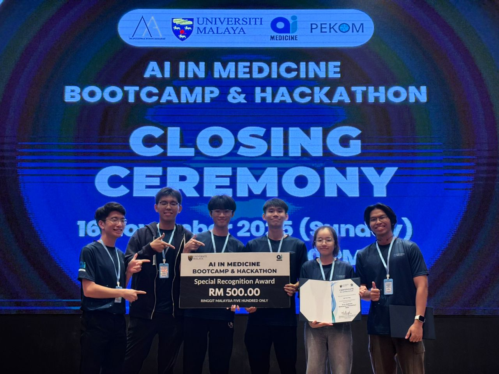
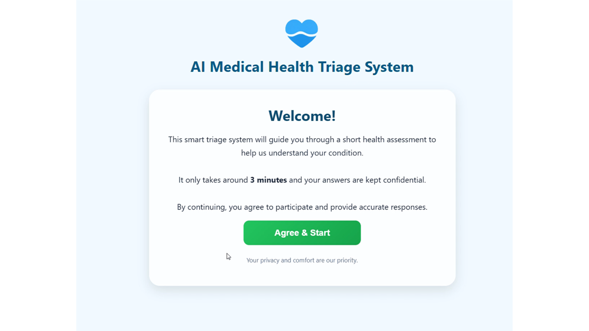

TRIAI
Next-Generation Hospital Triage System Design and Development
Tech Stack
Overview
TRIAI (Next-Generation Hospital Triage System) is an AI-powered kiosk designed to improve the efficiency and accuracy of emergency department triage. Developed during the AI in Medicine Bootcamp & Hackathon 2025, the system collects patient inputs, generates structured medical summaries, and assigns risk levels based on the Modified Early Warning Score (MEWS) to support faster and more informed clinical decision-making.
Awards & Honors
TRIAI was recognized as a Top 5 Finalist (4th Place) at the AI in Medicine Bootcamp & Hackathon 2025, organized by MESA and PEKOM Universiti Malaya in collaboration with MOSTI. The project stood out for its innovative application of AI in enhancing hospital triage workflows and healthcare delivery.
Problem
Emergency departments often face inefficiencies in triage due to:
- High patient volume and limited medical staff
- Time-consuming manual data collection and documentation
- Inconsistent risk assessment during initial screening
- Lack of structured and standardized patient summaries
- Delays in identifying high-risk patients
These challenges can lead to longer waiting times and increased risk of delayed critical care.
Solution
TRIAI introduces an AI-powered self-service kiosk that automates the initial triage process. Patients can provide inputs through multilingual support using text or voice, improving accessibility for diverse users. The system leverages LLMs to dynamically generate triage questions based on the patient’s chief complaint, selecting from a predefined question bank to ensure relevant, non-repetitive, and clinically important questions are asked. This structured questioning helps identify potential high-risk conditions early. In addition, patients can provide free-text descriptions of their condition, allowing them to explain situations such as how an injury occurred, which enhances the AI’s ability to generate accurate medical summaries and risk assessments. The system then produces structured summaries, assigns risk levels using MEWS-based scoring, and generates a colour-coded ticket to guide patients to the appropriate treatment zone, enabling faster, more consistent triage while reducing the workload on healthcare staff.
Key Features
-
Dynamic LLM-Driven Questioning
Generates relevant triage questions based on chief complaint using a predefined question bank, avoiding repetition and prioritizing critical information
-
AI-Generated Medical Summaries
Converts structured and unstructured inputs into concise clinical summaries
-
Real-Time Data Flow to Dashboard
Seamless integration with backend systems for monitoring and decision-making
-
Free-Text Patient Input
Allows patients to describe their condition in detail, improving AI understanding and analysis
-
MEWS-Based Risk Scoring
Automatically assigns patient risk levels for prioritization
-
Voice & Text Input Support
Enables flexible and user-friendly interaction
-
Multilingual Support
Supports multiple languages for better accessibility and inclusivity
Future Development
Currently, the LLM is designed to align with MEWS-based scoring for risk assessment. Future development will focus on fine-tuning the model using real clinical historical data to better adapt to local patient populations and improve accuracy. In addition, the system interface will be refined through user testing to enhance usability and accessibility. Improvements in voice input accuracy, particularly for multiple languages, will also be prioritized. Finally, further testing with medical assistants and healthcare staff will be conducted to gather feedback and enhance system functionality, ensuring better integration into real clinical workflows.
Project Gallery

